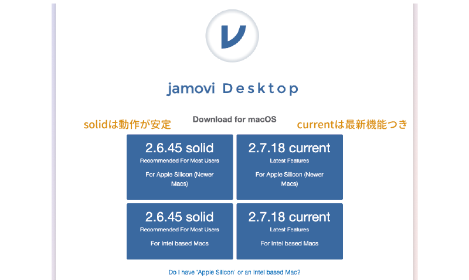
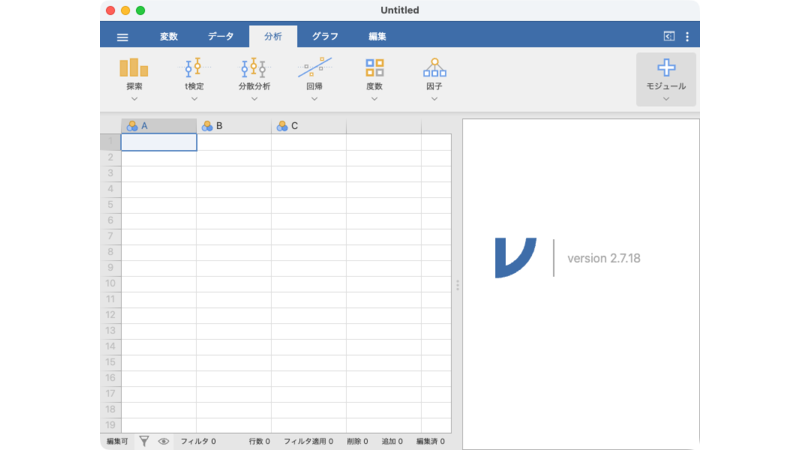
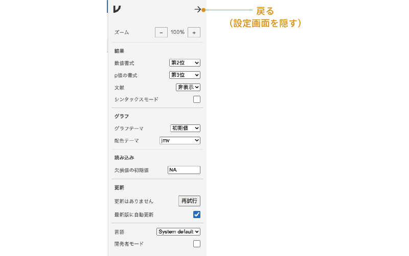
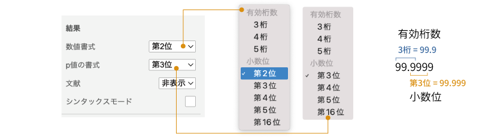
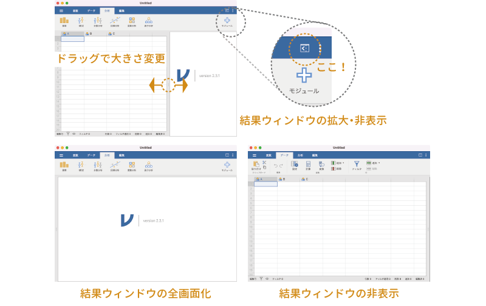
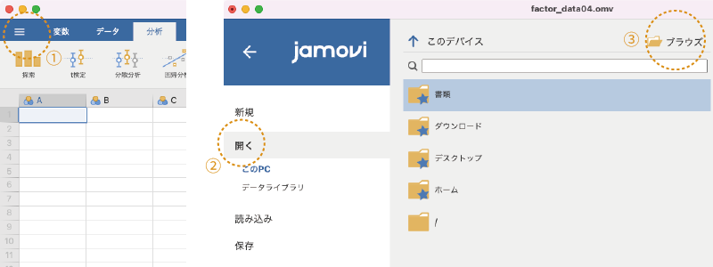
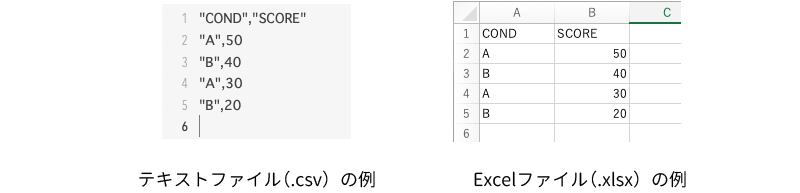

2 jamoviの導入
まず，jamoviのインストール方法や起動方法，環境設定など，基本的な操作について見ていきます。
2.1 jamoviのインストール
まずはソフトウェアのインストールからです。jamoviウェブサイトのダウンロードページから，ソフトウェアをダウンロードしましょう。ダウンロードページには「2.x.xx solid」というダウンロードボタンと「2.x.xx current」というダウンロードボタンの2種類があります（図 2.1）。
このうちの「solid」のほうは「安定版」で，最新の機能は含まれていませんが，動作が安定しているバージョンです。もう一方の「current」は最新版で，最新の機能が取り入れられているのですが，やや動作が不安定かもしれません。どちらを選ぶか迷った場合は，ひとまず「solid（安定版）」を選んでおくとよいでしょう。
なお，本書ではバージョン2.7.18(current)を元に説明します。
Windowsでのインストール方法
Windowsを使用している人の場合，ダウンロードしたファイルをダブルクリックするとインストーラが実行されるので，あとはインストーラの指示にしたがっていけばインストールは完了です。
Macでのインストール方法
Macを使用している人の場合，ダウンロードしたファイルをダブルクリックして開き，その中にある「jamovi」を「アプリケーション」フォルダにドラッグ・アンド・ドロップすればインストールは完了です。
LinuxまたはChromebookでのインストール方法
最近のバージョンでは，LinuxやChromebook1でもjamoviを利用できるようになりました。Linuxの場合にはディストリビューションごとに設定方法が少しずつ異なりますので，ここでは具体的なインストール方法は省略します。ウェブサイトに示された手順にしたがってインストールしてください。
2.2 起動と終了
まずはソフトウェアの起動と終了の仕方を見ておきましょう。
2.2.1 jamoviの起動
Windowsの場合，jamoviを起動するにはデスクトップに配置されているアイコンをダブルクリックしてください。デスクトップにアイコンがない場合，「スタートメニュー」の「すべてのアプリ」から「jamovi」を選択すれば起動することができます。Macの場合は，「アプリケーション」フォルダまたはLaunchpadでを選択して実行してください。
jamoviを起動すると図 2.2のような画面が現れます。

基本的な使い方については「次章」で説明しますので，ここでは起動できるかどうかだけ確認しておきましょう。
2.2.2 jamoviの終了
jamoviの終了方法は，開いているjamoviウィンドウをすべて閉じるだけです。作業中の内容がある場合には，忘れずに作業内容を保存しておいてください。ファイルの保存方法についてはこの後の「ファイル操作」で説明します。
2.3 環境設定
画面最上部，青色の帯の一番右端にある「⋮」をクリックすると，ウィンドウ右側にjamoviの画面表示や動作に関する設定項目が表示されます（図 2.3）。
実際の使用場面では環境設定を変更する必要はほとんどないと思いますが，どのような設定項目があるのかをひととおり見ておくことにしましょう（図 2.4）。

これらの項目のうち，数値書式とp値の書式については説明が必要かもしれません（図 2.5）。

「数値書式」と「p値の書式」の表示形式は，「有効桁数」と「小数位」の2とおりの方法で設定できます。「有効桁数」は，結果を表示させる際に整数部分を含めて最低何桁まで表示させるかを指定する方法で，有効桁数を3桁にすると，「1」は「1.00」，「1.3」は「1.30」，「12.3」は「12.3」というように，少なくとも3桁分の数値が表示されるようになります。なお，指定した有効桁数よりも整数部分の桁数が多い場合は，整数部分のみが表示され，小数点以下は表示されません。たとえば，有効桁数3桁で結果の値が「9999.999」であったような場合には，画面上では「9999」という表示になります。
これに対し，「小数位」は小数点以下を何桁目まで表示させるかという設定方法で，小数位を第2位にすると，「1」は「1.00」，「1.3」は「1.30」，「12.3」は「12.30」と表示されます。先ほどの有効桁数の場合とよく似ていますが，「12.3」の場合には表示方法が異なっている点に注意してください。小数位による指定では，整数部分が何桁あるかにかかわらず，小数点以下は指定した桁数だけ表示されるのです。またこの場合，指定した桁数よりも数値が短い場合には，その分を「0」で埋める形で表示されます。たとえば，小数第2位の指定で結果の数値が「12」であった場合には，画面上には「12.00」と表示されます。
実験レポートの場合，小数位の桁数がそろっていることが求められるため，「小数第2位」あるいは「小数第3位」の設定にしておくのがよいでしょう。なお，この設定はあくまでも結果の表示に関するものなので，ここを変更しても入力中のデータの表示は変わりません。
シンタックスモード
環境設定項目の「シンタックスモード」は，「シンタックスモード」と呼ばれる特殊モードのオン・オフです。jamoviは内部でRのスクリプト2を実行しており，このモードをオンにすると，分析のために使用したRスクリプトが結果画面に表示されます。将来的にjamoviからRへとステップアップしたい人にとって，このような機能はとても役立つことでしょう。
2.4 結果ウィンドウの拡大・非表示
環境設定用の「⋮」の隣にあるアイコンをクリックすると，分析結果の表示画面を全画面表示にしたり隠したりすることができます（図 2.6）。できるだけ広い画面で入力したデータを確認したい場合などには，このボタンをクリックして分析結果を非表示にするとよいでしょう。

なお，このボタンの形状は使用しているタブによって異なり，アプリケーション起動時と同じ「分析タブ」やその隣の「編集タブ」では（データを隠す），「変数タブ」や「データタブ」では（結果を隠す）になっていて，それぞれクリックした際には結果ウィンドウが全画面化されたり，非表示になったりします。なお，結果ウィンドウとデータ画面（スプレッドシート）の大きさは，両画面の間にあるグレーの部分をマウスでドラッグして自由に変更することもできます。
2.5 ファイル操作
2.6 演習：ファイルを開く
jamoviデータファイルの場合
それでは，ファイルを開く練習をしましょう。まず，次の練習用データファイルをダウンロードしてください。
- 練習用データファイル1（intro_data01.omv）
このファイルはjamoviのデータファイルなので，通常はこのファイルをダブルクリックすればjamoviで開くことができるのですが，ここではファイルメニューを使ってこのファイルを開いてみます。
手順1
「≡」をクリックしてファイルメニューを開きます。
手順2
「開く」で「このPC」が選択されていることを確認します。
手順3
「 ブラウズ」をクリックします（図 2.9）。

手順4
目的のデータファイルを選択します。
図 2.10のような画面が表示されたら完了です。
テキストファイル・Excelファイルの場合
テキストファイル（.csv）やExcelファイル（.xlsx）として保存されているデータファイルの開き方も手順は同じです。次の2つのデータファイルをダウンロードしてください。
練習用データファイル2（intro_data01.csv）
練習用データファイル3（intro_data01.xlsx）
この2つのデータファイルをそれぞれjamoviで開いてみましょう。テキストファイル（.csv）とExcelファイル（.xlsx）のどちらから先に開いても構いません。どちらの場合も，先ほどと同じ画面になるはずです。
なお，テキストファイルやExcelファイルを使用する場合，データファイルの1行目は変数名とみなされます。実際のデータは2行目以降に入力されている必要がありますので注意してください。また，テキストファイルでは，各データ値の区切りには半角のコンマ（,）を使用します（図 2.11）。
